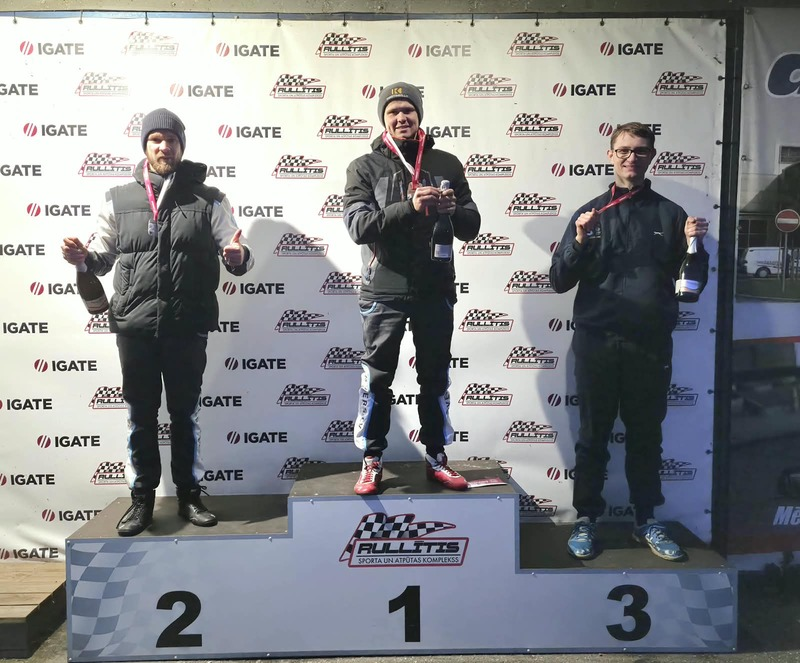

19. posmsLaipnieks uzvar, Vucāns Openkart aizsardzības ministrs
Sestdien, 24. oktobrī, Sporta kompleksā "Rullītis" notika Openkart 20. sezonas 19. posms. Uzvaru, startējot no trešās vietas un aizvadot ļoti aizraujošu cīņu ar savu komandas biedru Dāvi Zalmanu, izcīnīja desmitkārtējais čempions Andrejs Laipnieks (Movers.lv). Ja cīņa par pirmo vietu izšķīrās pēdējos piecos apļos, tad par…
Lasīt vairāk